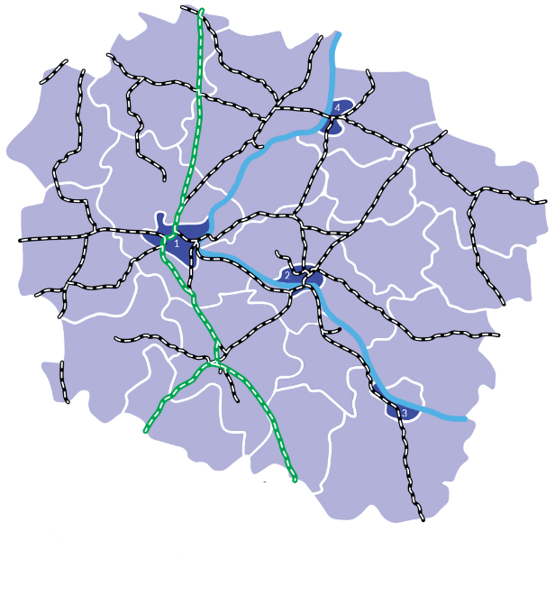

Zakład Linii Kolejowych w Bydgoszczy
Sekcja Kolejowych Obiektów Inżynieryjnych IZ Bydgoszcz
Zespół diagnostyczny ds. obiektów inżynieryjnych IZ13DKO

W portalu sprawdzisz:
- listę ewidencyjną wszystkich obiektów inżynieryjnych znajdująch się w Zakładzie Linii Kolejowych w Bydgoszczy,
- obiekty inżynieryjne znajdujące się na wybranej linii kolejowej w obrębie IZ Bydgoszcz,
- stan techniczny obiektów inżynieryjnych, a także oficjalne statystyki dla linii kolejowych, ISE oraz IZ,
- paramtery techniczne tychże obiektów oraz sprawdzisz planowane prace remontowe lub konserwacyjne,
- aktualne protokoły z kontroli stanu technicznego obiektów inżynieryjnych, a za pomocą kreatora będziesz mógł również dodać, zaktualizować lub utworzyć nowe raporty stanu technicznego.
Podsumowując dowiesz się wszystkiego na temat obiektów inżynieryjnych znajdujących się w zarządzie IZ Bydgoszcz.
Portal stanowi bazę wiedzy opartą na aktualnych protokołach okresowych i specjalnych z przeglądów stanu technicznego kolejowych obiektów inżynieryjnych oraz informacji z baz danych przekazanych przez Użytkownika.
Stanowi wsparcie na Projektantów, Inspektorów, Diagnostów oraz Kadry Zarządzającej.
Wszystkie funkcjonalności portalu dostępne są tylko dla zalogowanych użytkowników.